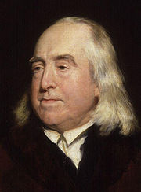
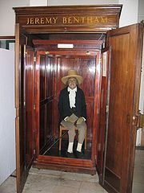
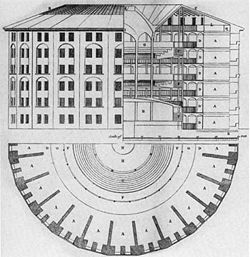
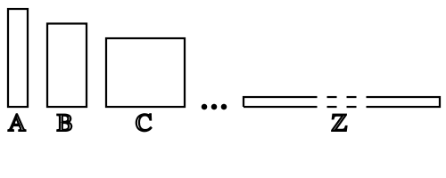
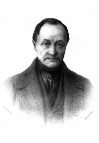

Contents · 20 slides
- Bentham and Comte
- Jeremy Bentham
- A Purveyor of Odd Ideas
- A Purveyor of Odd Ideas
- Utlitarianism
- Methodological Individualism
- Greatest Good for Greatest Number
- Opposed to Utilitarianism
- Against Moral Sentiments
- The Four Sanctions
- Government as Social Calculus
- Government as Social Calculus
- Utilitarian Verse
- Problems with Utilitarianism: Mere Addition
- Problems with Utilitarianism: Utility Monster
- Problems with Utilitarianism: Kill the Redheads
- Auguste Comte
- Comte’s Historical Stages
- Comte’s Six Sciences
- Religion of Humanity
1 Bentham and Comte
- Social Physics
2 Jeremy Bentham

- 1748-1832
- Friend of James Mill and John Stuart Mill
- Founder of Utilitarianism
- Energetic social reformer
- Disdained tradition
3 A Purveyor of Odd Ideas
- Bentham’s auto-icon is on display at University College London

4 A Purveyor of Odd Ideas

- Panopticon – a “model” prison
- Metaphor for closed circuit TV systems
5 Utlitarianism
- “Nature has placed mankind under the governance of two sovereign masters, pain and pleasure. It is for them alone to point out what we ought to do, as well as to determine what we shall do. On the one hand the standard of right and wrong, on the other the chain of causes and effects, are fastened to their throne. They govern us in all we do, in all we say, in all we think: every effort we can make to throw off our subjection, will serve but to demonstrate and confirm it. In words a man may pretend to abjure their empire: but in reality he will remain subject to it all the while. The principle of utility recognises this subjection” -- An Introduction to the Principles of Morals and Legislation
6 Methodological Individualism
- “The community is a fictitious body, composed of the individual persons who are considered as constituting as it were its members. The interest of the community then is, what?—the sum of the interests of the several members who compose it.” -- An Introduction to the Principles of Morals and Legislation
7 Greatest Good for Greatest Number
- “To this denomination has of late been added, or substituted, the greatest happiness or greatest felicity principle: this for shortness, instead of saying at length that principle which states the greatest happiness of all those whose interest is in question, as being the right and proper, and only right and proper and universally desirable, end of human action: of human action in every situation, and in particular in that of a functionary or set of functionaries exercising the powers of Government.” -- An Introduction to the Principles of Morals and Legislation
8 Opposed to Utilitarianism
- “A principle may be different from that of utility in two ways: 1. By being constantly opposed to it: this is the case with a principle which may be termed the principle of asceticism. 2. By being sometimes opposed to it, and sometimes not, as it may happen: this is the case with another, which may be termed the principle of sympathy and antipathy.” ” -- An Introduction to the Principles of Morals and Legislation
- Note difference from Adam Smith on #2!
9 Against Moral Sentiments
- “Among principles adverse to that of utility, that which at this day seems to have most influence in matters of government, is what may be called the principle of sympathy and antipathy. By the principle of sympathy and antipathy, I mean that principle which approves or disapproves of certain actions, not on account of their tending to augment the happiness, nor yet on account of their tending to diminish the happiness of the party whose interest is in question, but merely because a man finds himself disposed to approve or disapprove of them: holding up that approbation or disapprobation as a sufficient reason for itself, and disclaiming the necessity of looking out for any extrinsic ground.” -- An Introduction to the Principles of Morals and Legislation
10 The Four Sanctions
- “There are four distinguishable sources from which pleasure and pain are in use to flow: considered separately, they may be termed the physical, the political, the moral, and the religious: and inasmuch as the pleasures and pains belonging to each of them are capable of giving a binding force to any law or rule of conduct, they may all of them be termed sanctions.” -- An Introduction to the Principles of Morals and Legislation
11 Government as Social Calculus
- “Pleasures then, and the avoidance of pains are the ends which the legislator has in view: it behoves him therefore to understand their value. Pleasures and pains are the instruments he has to work with: it behoves him therefore to understand their force, which is again, in another point of view, their value.” -- An Introduction to the Principles of Morals and Legislation
12 Government as Social Calculus
- “To a number of persons, with reference to each of whom the value of a pleasure or a pain is considered, it will be greater or less, according to seven circumstances: to wit, the six preceding ones; viz.
- 1. Its intensity.
- 2. Its duration.
- 3. Its certainty or uncertainty.
- 4. Its propinquity or remoteness.
- 5. Its fecundity (likely to produce more of the same).
- 6. Its purity (likely to produce its opposite).
- And one other; to wit:
- 7. Its extent; that is, the number of persons to whom it extends; or (in other words) who are affected by it.”
- An Introduction to the Principles of Morals and Legislation
13 Utilitarian Verse
- “Intense, long, certain, speedy, fruitful, pure—Such marks in pleasures and in pains endure.Such pleasures seek, if private be thy end:If it be publie, wide let them extend.Such pains avoid, whichever be thy view:If pains must come, let them extend to few.”-- An Introduction to the Principles of Morals and Legislation
14 Problems with Utilitarianism: Mere Addition

- “That argument again, finally arriving at a situation Z, in which there are an enormous number of people whose lives are worth living, but just barely. Parfit calls this the Repugnant Conclusion, and says that Z is in fact worse than A…” (Wikipedia)
15 Problems with Utilitarianism: Utility Monster
- “Utilitarian theory is embarrassed by the possibility of utility monsters who get enormously greater sums of utility from any sacrifice of others than these others lose . . . the theory seems to require that we all be sacrificed in the monster’s maw, in order to increase total utility.” – Robert Nozick
16 Problems with Utilitarianism: Kill the Redheads
- What if people dislike redheads so much that killing them all would raise the general level of utility?
- The general issue is one of rights: How can utilitarianism account for our strong feeling that rights must be respected?
- Side constraints?
17 Auguste Comte
- 1798-1857
- Founder of Positivism
- Founder of “Religion of Humanity”
- Sought a “social physics”
- Major influence on J.S. Mill
- Contrast with Smith: Reason, not sentiments

18 Comte’s Historical Stages
- Stage 1: Theological
- Stage 2: Metaphysical
- Stage 3: Scientific
19 Comte’s Six Sciences
- Mathematics
- Astronomy
- Physics
- Chemistry
- Biology
- Sociology
20 Religion of Humanity
- “While the different forms of deism preserve the idea of God and dissolve religion into a vague religiosity, Comte proposes exactly the contrary: a religion with neither God nor the supernatural. His project had little success; he even accomplished a tour de force by uniting both believers and non-believers against him.” – Stanford Encyclopedia of Philosophy